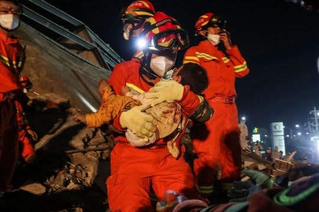

COVID-19 Epidemic Control Measures in Emergency Response Action on a Construction Collapsing Accident in Quanzhou: Practice and Experience
On 7 March, the Xinjia Hotel in Quanzhou City (Fujian Province) in China experienced a building collapse. After the accident, the Ministry of Emergency Management of China dispatched a working group to the scene to guide the rescue. Fire & Rescue Corp of Fujian Province mobilized 1,086 fighters as well as rescue equipment and materials. In the spirit of life first, rescuers overcame the difficulties caused by COVID-19 epidemic and actively carried out rescue operations to minimize accident losses and casualties. Here is the interesting report prepared by the Chinese authorities and shared with the INSARAG Secretariat about the measures put in place during the operation. It is heartening to note that elements of the INSARAG guidelines on the establishment of the Base of Operations seems to have been well implemented.
COVID-19 Control Measures in Emergency Response Action
Schematic Diagram of Rescue Site
